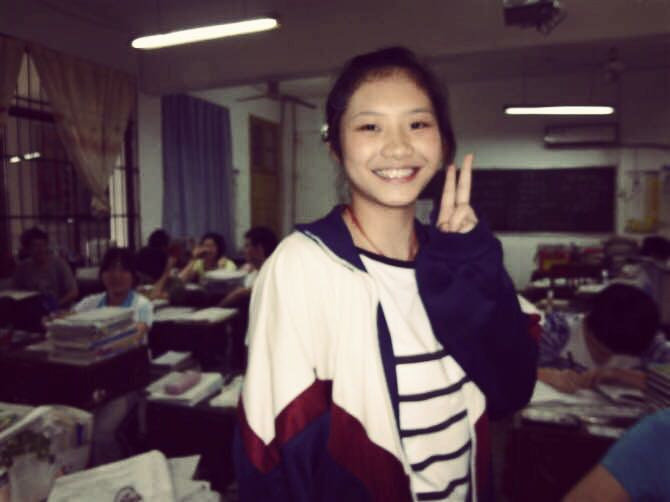
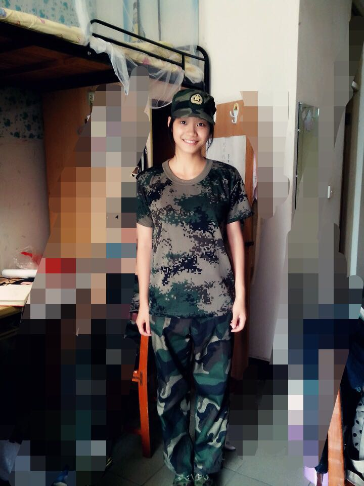
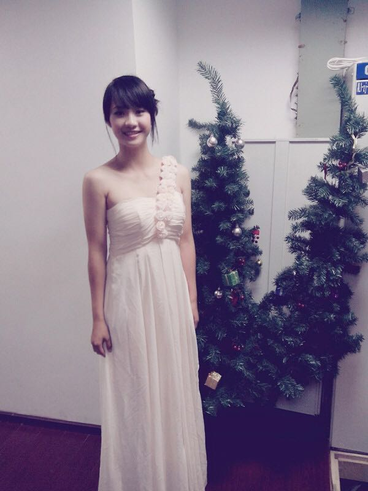
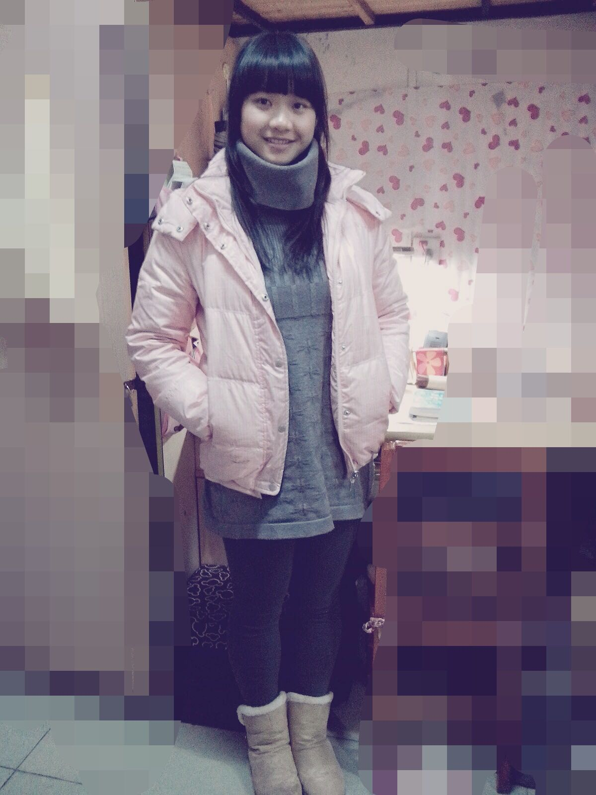
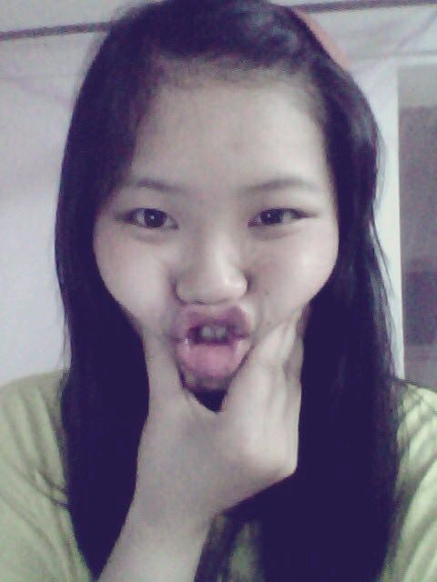
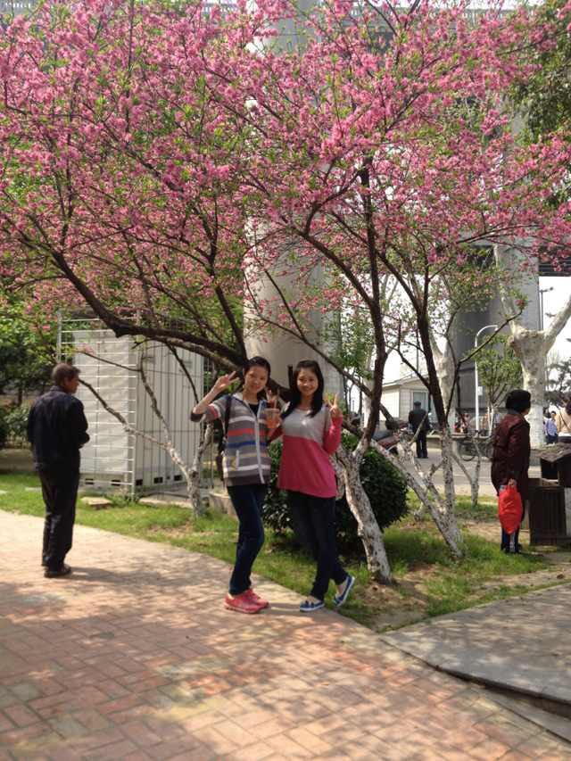
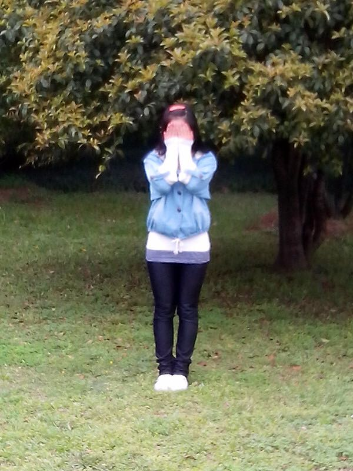
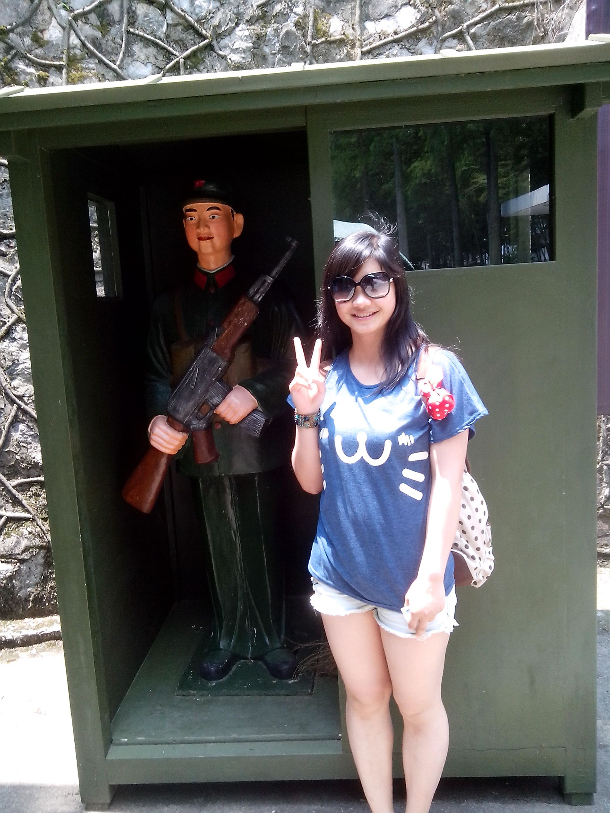
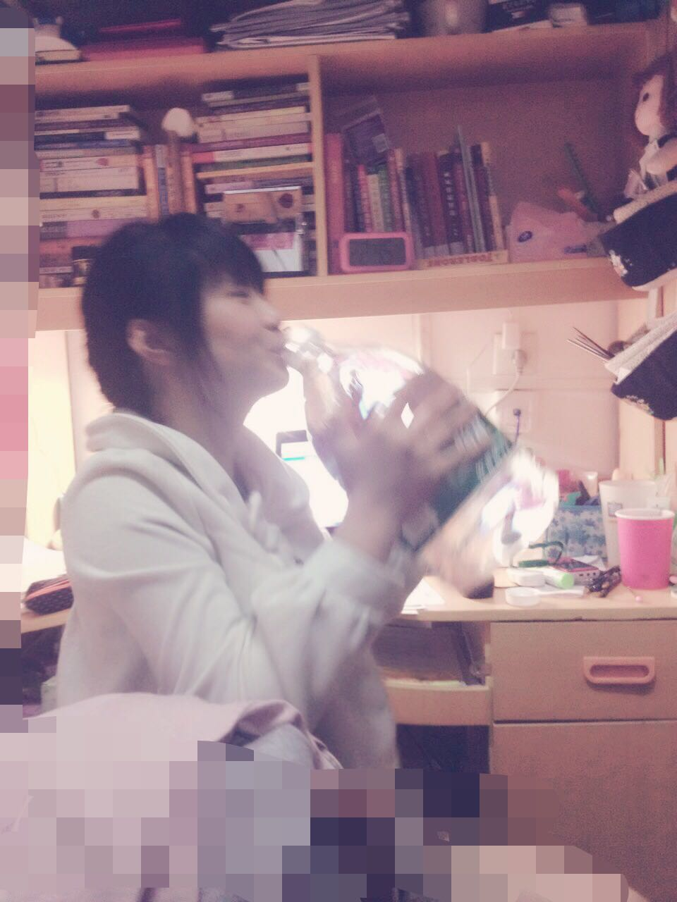
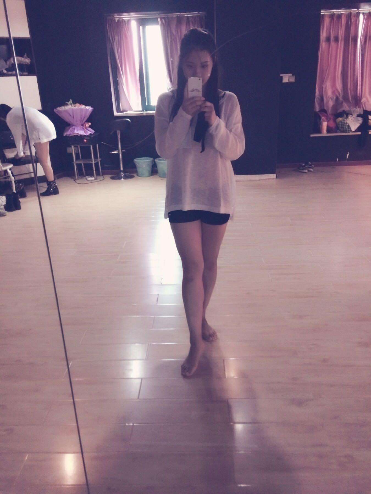

正文: 真的完全不同！！！！！整个人都不一样了！！！
楼上说只谈体重不讲身高都是耍流氓，答主身高大概是163-165之间，因为每次体检数据都有变化嘛！
高中的时候因为一直跳操每天体力+脑力训练，吃得很多，虽然没胖，但是比较壮。

这是高三的时候，角度取的比较好，看起来并没有太可怕，脸看起来还是挺大的。
高三毕业后，可能是没什么压力了，每天吃得也少了，天气热了等等狗屁原因，就慢慢瘦了。
这应该是我近几年最瘦的时候，不光瘦体力也很好，就100左右的样子，那时候晚上12点爬到南岳山上看日出，都活力十足的！你看脸很小是吧！
为什么说大学是一盆猪饲料呢！！！
军训的时候，我还是这样的

看起来很瘦四不四！！
迎新晚会的时候（10月）我还是这样的的

这时候已经胖了一点了，而且因为很长时间没锻炼了，身上的肉都变松了。看得出壮壮的
然后到了圣诞节的时候！！高能预警！！
腿开始一去不复返地粗了！！脸开始一去不复返地大了！
这个时候应该有115了吧。。。。脸和腿很明显<(=ｏ ‵-′)ノ☆
然后！！！那个冬天就达到了人生最胖ヽ(〃∀〃)ﾉ应该超过120了，反正不敢上称了。
你们以为我会发图？不！那个时候连照片都不敢拍了。。。。
冬天过后就慢慢瘦了一点，不过还是115-118的样子，并没有太多改变。
随意地感受一下我脸上的肉

还有出去玩的时候和朋友的对比还有短粗腿神马的
后来和初恋分手以后整个人陷入自暴自弃状态，应该有120了*罒▽罒*
那时我爸悄悄对我妈说，你看她现在怎么这么胖了，让她减减肥啊…于是我妈在家都不让我吃好多，天天叫我去运动。。。
但是减肥哪里是这么容易的事呢？胖的人就是喜欢自我放纵，加上后来又谈了恋爱更加是吃吃吃吃，sigh。铁血真女汉。

一直到大三，才开始幡然醒悟决心减肥，坚持跳舞跑步健身，到现在虽然还是没瘦到100，但是身体已经没以前弱了，之前大二那段时间真是三天两头跑医院，体重也控制在108-112之间很长一段时间了，比较喜欢现在的状态，能倒立能下腰能一字马能一口气提两壶水上五楼，爱上了运动也想一直坚持下去。瘦下来以后对自己更有自信了，喜欢上了照镜子，反而没以前喜欢买衣服了，更注重健康养生，能控制自己吃零食管住嘴了，气色也好了很多。
这是坚持锻炼了三个月的我，也是寒假之前的我（可惜过年胖三斤，你懂的）
虽然现在感觉减重进入了平台期，但是希望能再加把劲再瘦回当年那个我吧*罒▽罒*fighting！！